02//
Aus Wien
Viaggi sospesi: one of ten site-specific installations that tell the journey from Vienna to Rome through postcards.
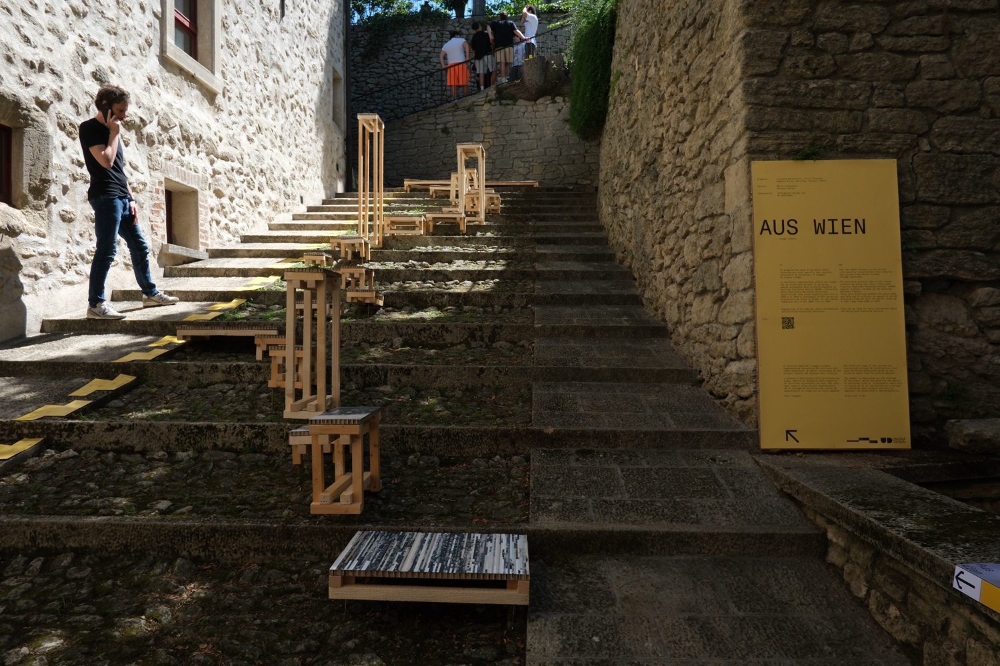
the project
The stops of the journey are represented by 28 structures, whose size changes according to two criteria taken from the archive’s dataset.
the archive
The postcards come from the dataset of Austrian Postcards Online (AKON), the postcard portal of the Austrian National Library. Digitised between 2012 and 2014, it holds more than 30,000 postcards from all over the world, dated from 1896 to 1925.
the data
The height of each block depends on the altitude of the town, from 30 mm for the lowest to 1500 mm for the highest. Its width comes from the number of postcards from that place, from 200 to 1500 mm. Its position along the stairs follows the distance from Vienna.
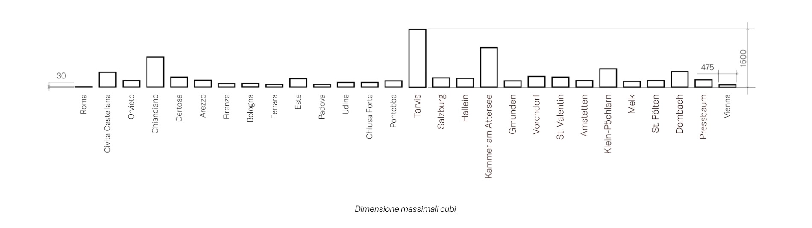
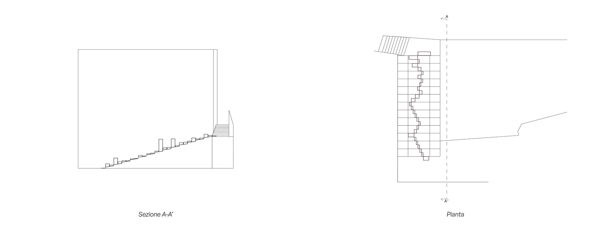
collage
A script provides an interactive interface to load postcards and arrange them as collages on a canvas. Each collage was built from the JSON file of a town’s postcards, using all the cards from that place. The images were then exported and fitted to the size of each block.
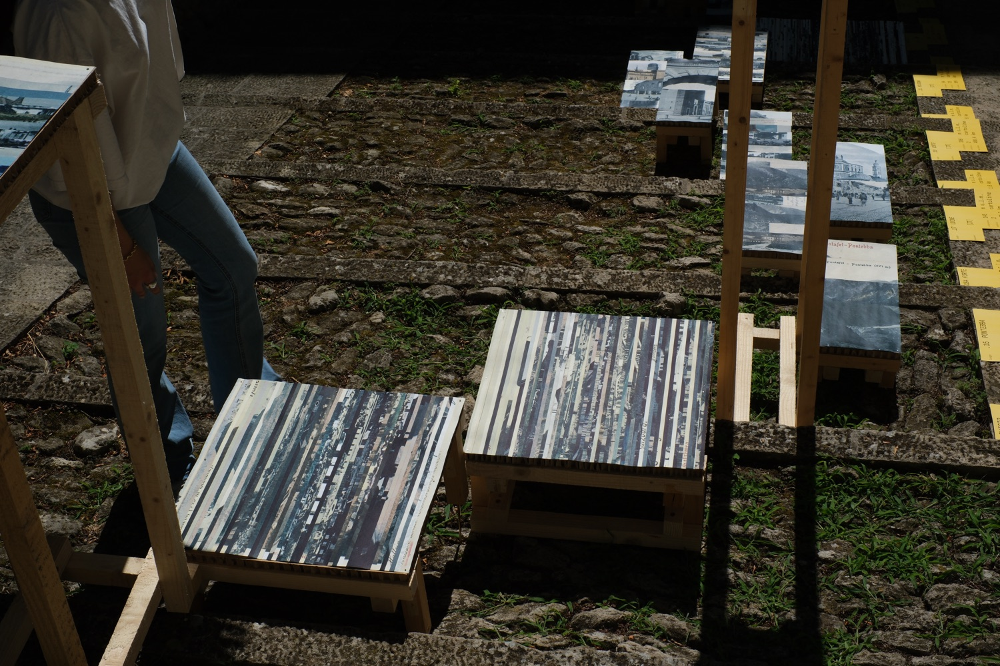
making it
We built the 28 wooden structures ourselves, from the workshop to the stairway.
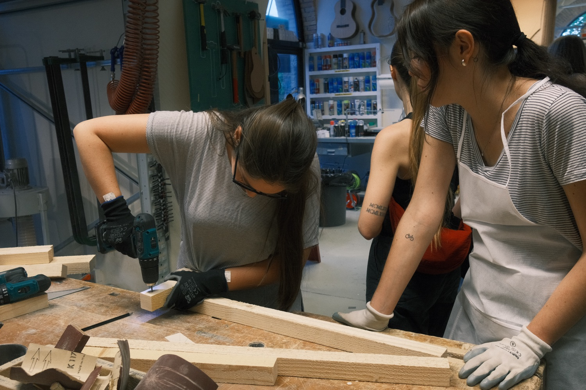
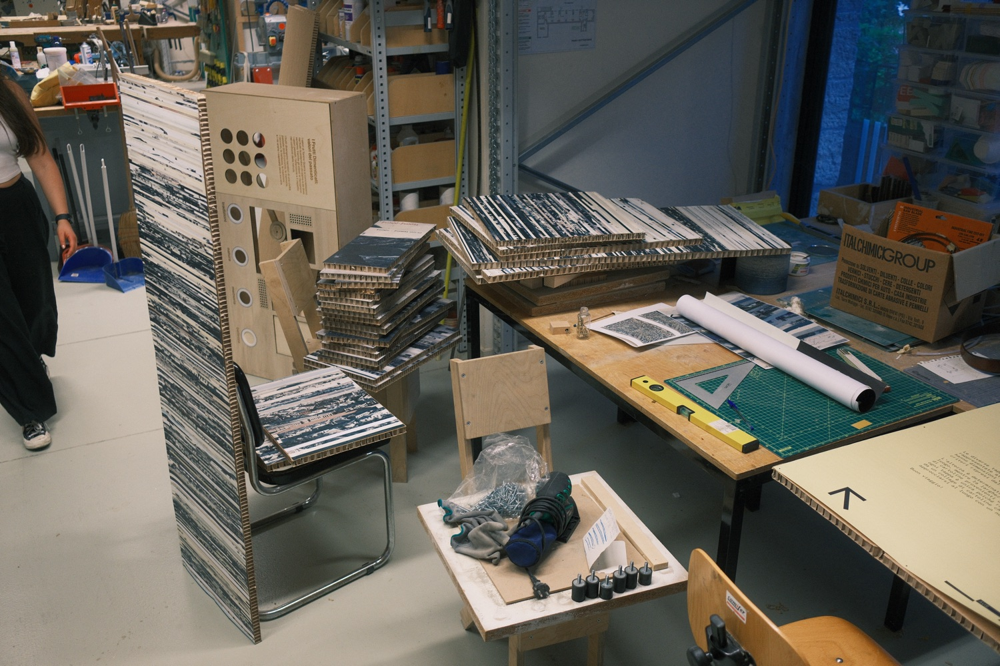
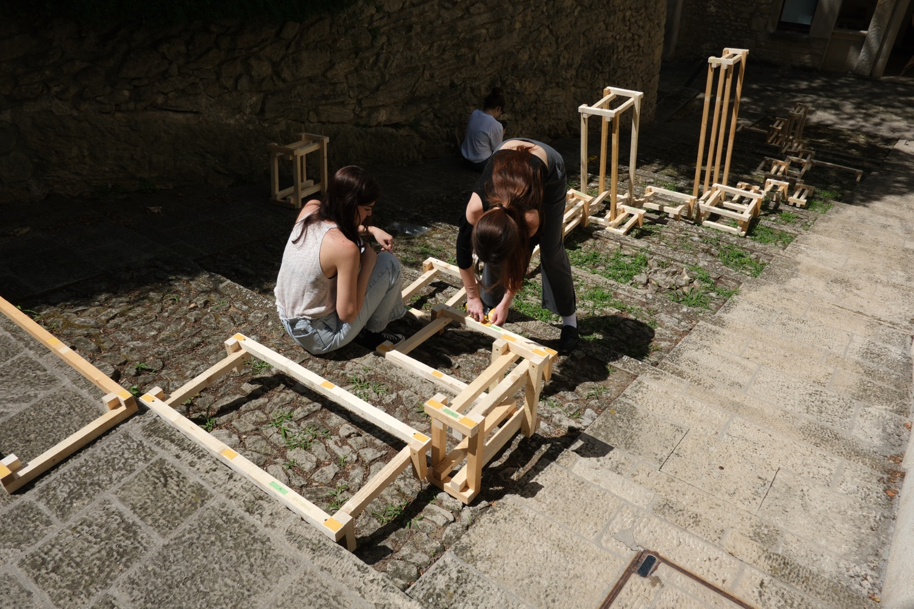
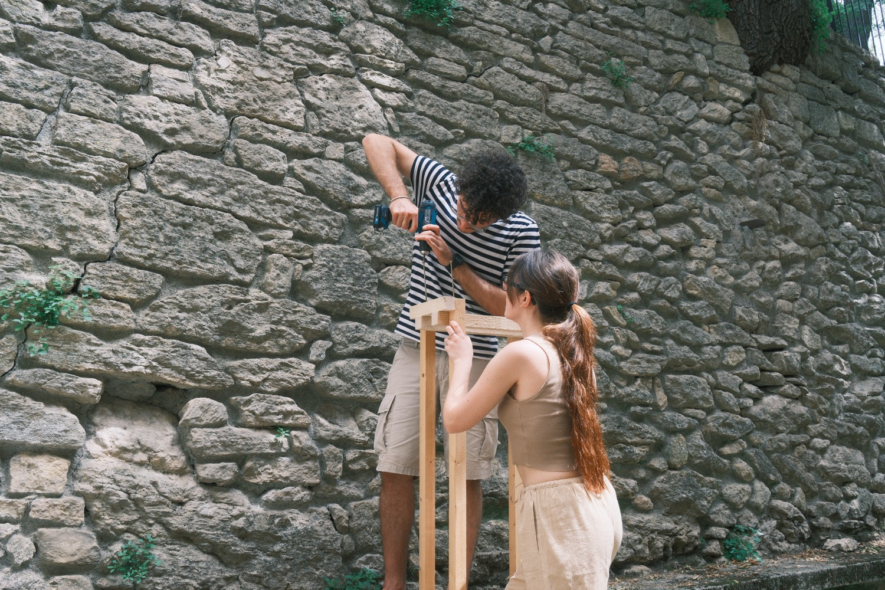
the installation
The installation runs along the main stairway in the garden of the Faculty of Design of the University of San Marino. Each of the 28 blocks stands for a town met on the drive from Vienna to Rome.
The aim is to bring out the Historical Postcards archive through the theme of travel and exploration, and to let people discover the hidden beauty of the postcard, an object that carries many values, among them waiting and memory.
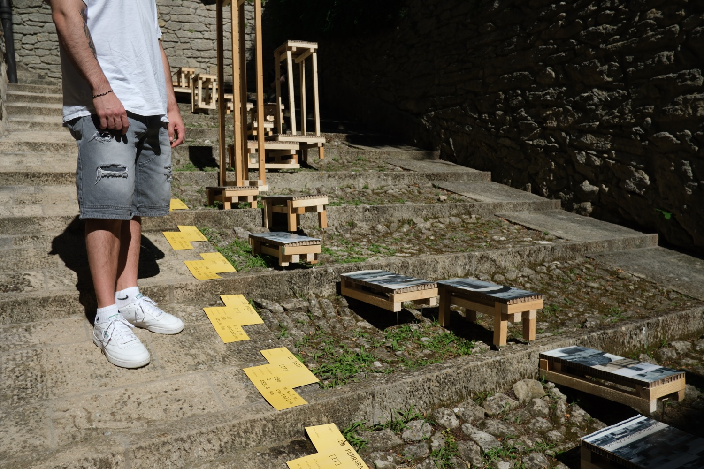
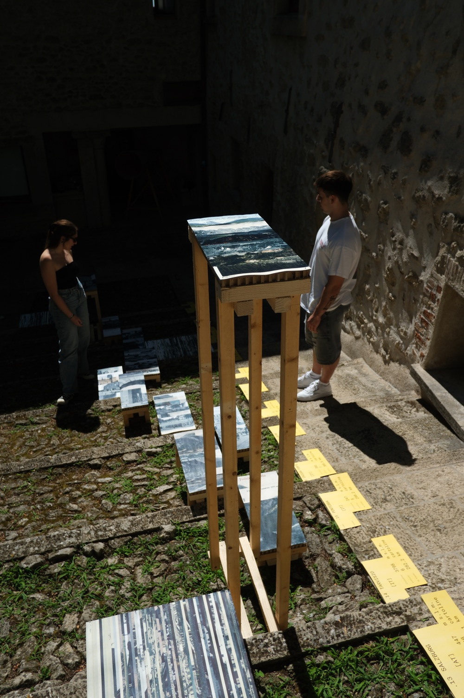
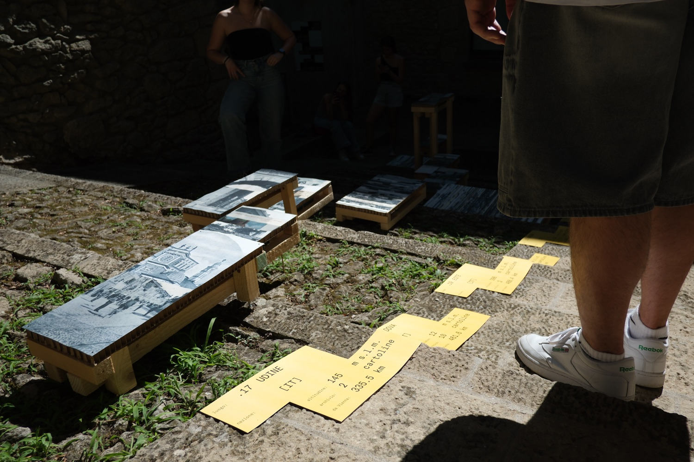
visual communication
Explanatory panels, posters and a logo that can change shape within the same grid.
The typeface is GT America Mono, by Noël Leu and Seb McLauchlan for Grilli Type (2016). It was chosen to recall the typewriter and a time when nothing written could be erased, just like on a postcard. The colours refer to those of the Austrian postal service.
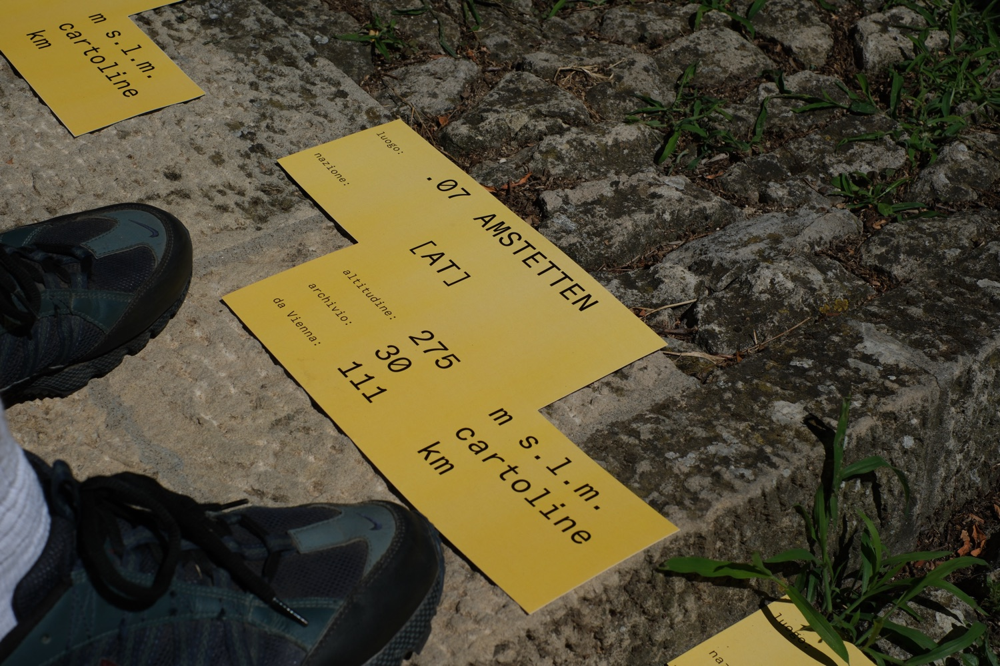
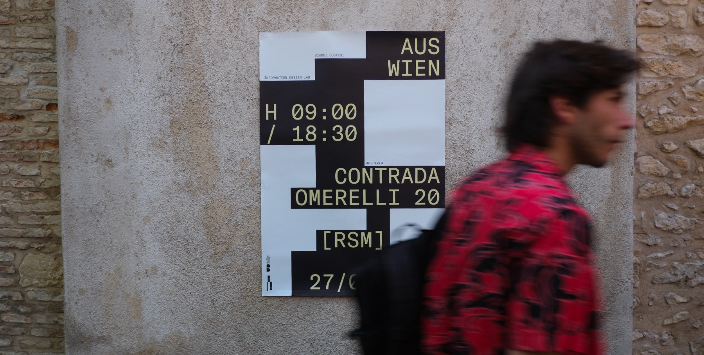
in the end
The project tells a journey through a medium few people know today: the postcard. Technology and its instant use have dulled the thrill of receiving a message from someone we love. Aus Wien gives value back to waiting, and to rediscovering a forgotten object that brings back a past not so far away.